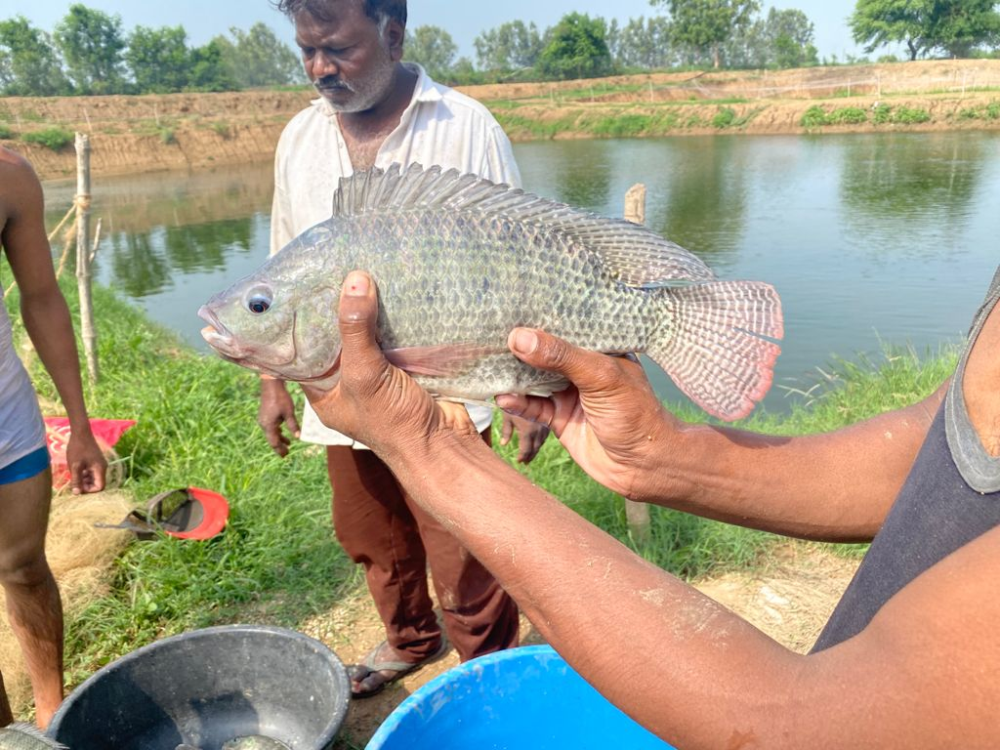
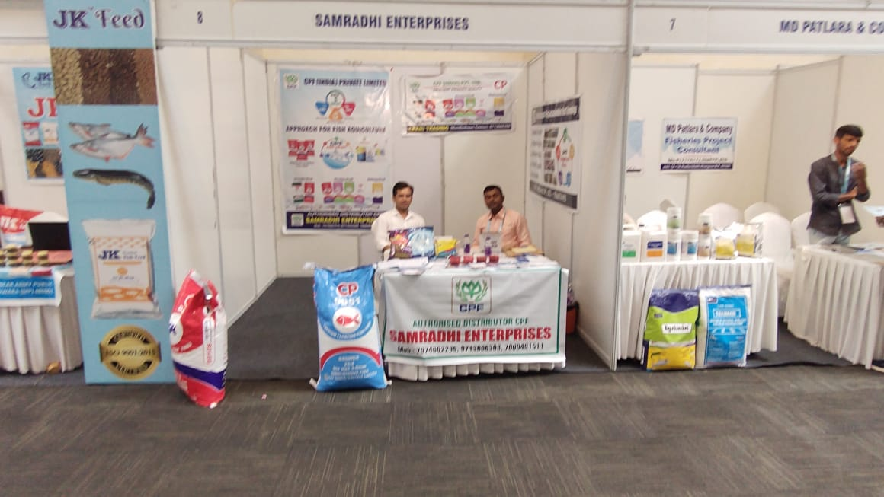
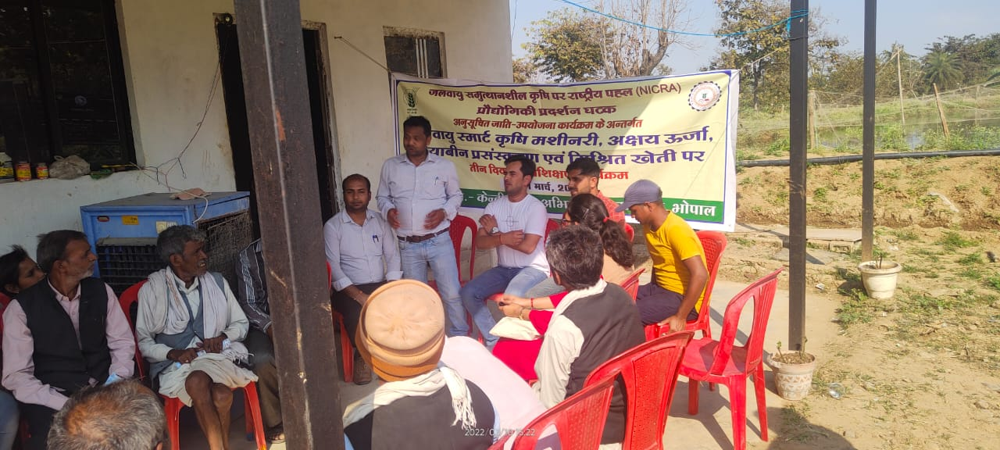

Our Business

Fish Farming
Pond Fish Farming
- We have got 11 acres of Pond farming in form of both earthen and poly liner ponds producing 200 mt of fishes per year out of them
- Major fish species cultured here are pangasius and Mono-sex GIFT Tilapia.
- Here we take 2 crops per year which can be possible by doing proper nursery management.
RAS Fish Farming
- RAS is a technology where water is recycled and reused after mechanical and biological filtration and removal of suspended matter and metabolities.
- This technology provides us much more yield per cubic meter (50- 75kg/m3) as compared to pond farming (5-7kg/m3).Here at Samradhi Fish Farm we got 8 tanks RAS setup which produces 40 tons of fish production in only 1500 m2 area.
- High valued species such as Pabda, Singhi, Desi Magur etc are mainly cultured here.
Biofloc Fish Farming
- BFT is an environmentally friendly aquaculture technology in which toxic materials to the fish such as Ammonia, nitrite and nitrate can be converted into useful proteinaceous feed.
- It is a technology used in aquaculture system with limited or zero water exchange under high stocking density, strong aeration and biota formed by biofloc.
- We have a 50 tanks Biofloc setup where we can produce upto 50 tons of fish in a single crop.
AQUA FEED
- Since past 5 years of fish farming we have understood fish feed very closely in terms of its quality, size, smell, texture and after using this (brand name) fish feed for this long period we stepped in fish feed distribution in 2021.
- Samradhi Fish Farm are exclusive authorized (Brand name) fish feed distributor of entire Madhya Pradesh State.


FISH FARMING TRAINING & CONSULTANCY
About us
- We are leading Fish Farming Training providers across India.
- The professionals at RM Fisheries Aquaculture have 5 years of combined experience in practical, applied and theoretical aspects of the fish farming sector.
- We emphasize cost effective methods of design and problem solving and also understand that theory and experimental solutions are not always best in terms of profitability.
- Our comprehensive knowledge and capabilities in fisheries sector are second to none and are guided by ‘innovation’ and ‘creativity’ as important problem solving tools.
Business Philosophy
- Our company is client – driven. We are here to serve you and your needs and pride ourselves in our ability to customize our service to satisfy your specific information, technology and management requirements.
- Note that we do not mass-market products or receive commissions or other incentives from manufacturers. This allows us to consider all options for you in completely objective and credible manner.
- All conversations and client information are held in strict conversation.
Services
- Pond Fish Farming Training & Consultancy.
- RAS Fish Farming Training & Consultancy
- Biofloc Fish Farming Training & Consultancy .
- Cage Fish Farming Training & Consultancy .
- Project Planning .